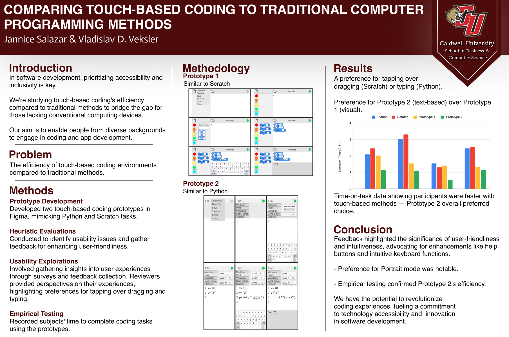

<div class="app-background">
  <div class="app-container">
    <!-- all content -->
<!doctype html>
<html lang="en" class="h-full">
<head>
  <meta charset="UTF-8">
  <meta name="viewport" content="width=device-width, initial-scale=1.0">

  <!-- Tailwind CSS -->
  <script src="https://cdn.tailwindcss.com/3.4.17"></script>

  <!-- Google Fonts -->
  <link rel="preconnect" href="https://fonts.googleapis.com">
  <link rel="preconnect" href="https://fonts.gstatic.com" crossorigin>
  <link href="https://fonts.googleapis.com/css2?family=Quicksand:wght@400;500;600;700&display=swap" rel="stylesheet">

  <!-- Custom CSS -->
  <link rel="stylesheet" href="style.css">

  <!-- SDK Scripts -->
  <script src="/_sdk/element_sdk.js"></script>
  <script src="/_sdk/data_sdk.js"></script>
</head>
<body class="h-full">

  <!-- App Wrapper -->
  <div id="app-wrapper" class="h-full w-full overflow-auto" 
       style="background: linear-gradient(135deg, #fff5f5 0%, #fef3f8 25%, #f5f0ff 50%, #f0f7ff 75%, #f5fffa 100%);">

    <!-- Floating decorative elements -->
    <div class="fixed inset-0 pointer-events-none overflow-hidden">
      <!-- Blobs -->
      <div class="blob absolute w-64 h-64 opacity-30 float-element" 
           style="background: linear-gradient(135deg, #FFB6C1, #FFC0CB); top: -5%; left: -5%;"></div>
      <div class="blob-2 absolute w-48 h-48 opacity-25 float-delayed" 
           style="background: linear-gradient(135deg, #B5EAD7, #C7F9CC); top: 10%; right: -3%;"></div>
      <div class="blob absolute w-56 h-56 opacity-20 float-element" 
           style="background: linear-gradient(135deg, #C9B1FF, #E0BBE4); bottom: 5%; left: 5%; animation-delay: -2s;"></div>
      <div class="blob-2 absolute w-40 h-40 opacity-25 float-delayed" 
           style="background: linear-gradient(135deg, #FFDAC1, #FFE5B4); bottom: 15%; right: 10%; animation-delay: -1s;"></div>

      <!-- Sparkles -->
      <div class="absolute text-2xl sparkle" style="top: 15%; left: 15%;">✨</div>
      <div class="absolute text-xl sparkle" style="top: 25%; right: 20%; animation-delay: -0.5s;">⭐</div>
      <div class="absolute text-2xl sparkle" style="bottom: 30%; left: 10%; animation-delay: -1s;">💫</div>
      <div class="absolute text-xl sparkle" style="bottom: 20%; right: 15%; animation-delay: -1.5s;">✨</div>
      <div class="absolute text-lg sparkle" style="top: 40%; left: 5%; animation-delay: -0.3s;">🌸</div>
      <div class="absolute text-lg sparkle" style="top: 60%; right: 8%; animation-delay: -0.8s;">🌷</div>
    </div>

    <!-- Main Content -->
    <main id="page-content" class="relative z-10 min-h-full flex flex-col items-center justify-center px-6 py-12">
      <div class="text-center max-w-2xl">

<style>
@keyframes gradient {
  0% { background-position: 0% 50%; }
  50% { background-position: 100% 50%; }
  100% { background-position: 0% 50%; }
}
</style>

<section class="project-block">

  <!-- TITLE -->
  <h2>Touch-Based Coding App</h2>
  <p class="project-subtitle">
    A UX exploration into making coding more intuitive through touch interaction.
  </p>

  <!-- OVERVIEW IMAGE (poster or main visual) -->
  

  <!-- PROBLEM -->
  <h3>Problem</h3>
  <p>
    Traditional coding environments can feel overwhelming for beginners.
    I explored how touch-based interaction could make coding more accessible and intuitive.
  </p>

  <!-- WIREFRAMES -->
  <h3>Wireframes</h3>
  
  
  

  <!-- RESEARCH -->
  <h3>User Research</h3>
  <p>
    I conducted surveys and evaluations to understand how users interact
    with early prototypes and what challenges they face.
  </p>

  <!-- REFLECTION -->
  <h3>Reflection</h3>
  <p>
    This project helped me understand the importance of iteration, feedback,
    and designing for accessibility and ease of use.
  </p>

</section>
        <!-- Decorative Divider -->
        <div class="my-8 flex items-center justify-center gap-3 slide-up opacity-0" style="animation-delay: 0.9s;">
          <span style="color: #FFB6C1;">♡</span>
          <div class="w-16 h-0.5 rounded-full" style="background: linear-gradient(90deg, #FFB6C1, #B5EAD7);"></div>
          <span style="color: #B5EAD7;">♡</span>
          <div class="w-16 h-0.5 rounded-full" style="background: linear-gradient(90deg, #B5EAD7, #C7CEEA);"></div>
          <span style="color: #C7CEEA;">♡</span>
        </div>
      </div>
    </main>

  </div>

  <!-- Custom JS -->
  <script src="script.js"></script>

</body>
</html>

  </div>
</div>
